Sistemas Operativos y Redes
Capa de Red
Semestre 2022-1
Cristian Ruz - cruz@ing.puc.cl
Departamento de Ciencia de la Computación
Pontificia Universidad Católica de Chile
Capa de Red
Objetivo: Transmisión de paquetes desde emisor a receptor
Unidad de transmisión: paquete o datagrama
Dos problema principales:
- Direccionamiento. Determinar la ubicación del nodo destino en la red.
- Cada miembro (host) debe poseer una dirección única
- La información del paquete debe ser suficiente para encontrar al destino
- Enrutamiento. Coordinar routers para que el paquete llegue al destino.
- Algoritmos para determinar rutas: algoritmos de enrutamiento (routing)
- Routing debe ser eficiente

Objetivo: Transmisión de paquetes desde emisor a receptor
Routers son dispositivos de almacenamiento y reenvío: store-and-forward/
- Forwarding. Decisión local de un router
- Cada router determina el próximo camino (salida) de un paquete mirando su dirección de destino
- Router usa forwarding tables
- Enrutamiento (routing). Decisión distribuida entre routers
- Routers ejecuta un algoritmo de routing.
- Algoritmo de routing permite llenar las forwarding tables
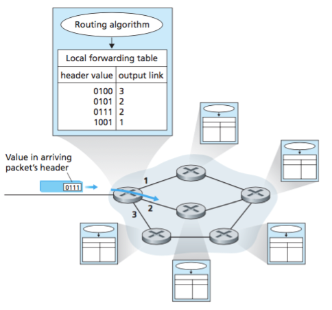
Modos de Conexión
Virtual Circuit Network
Esquema de red telefónica
- Setup del VC. Permite reserva ancho de banda.
- Data transfer.
- Destrucción del VC.
- Router mantiene estado de la conexión: Connection-oriented
Garantiza ancho de banda durante la conexión
- Ancho de banda desperdiciado mientras no se transmiten datos
- Poco flexible a congestiones
- Limita la cantidad de VC simultáneos
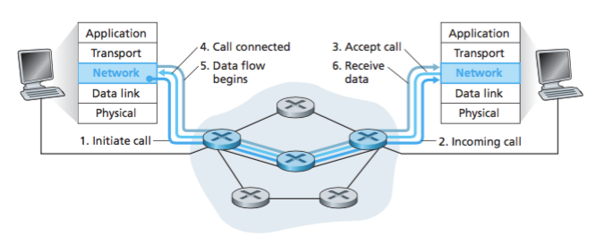
Datagram network
Esquema de Internet
- Cada paquete lleva la dirección de destino.
- Routers reenvían de acuerdo a su forwarding table
- Paquetes podrían tener distintos caminos.
- Routers no saben de caminos ni estado. Connectionless.
No garantiza ancho de banda
- Flexible ante congestión
- Permite ocupar de mejor manera el ancho de banda
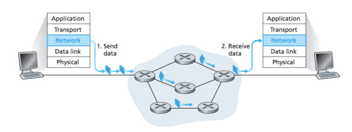
Direccionamiento de Red
¿Qué hay en forwarding table?
Router debe tener respuesta para cada dirección posible
- Destinos para cada dirección posible. Usualmente forwarding table contiene prefijos
Ejemplo con rangos de direcciones de 32-bit
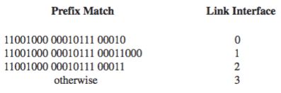
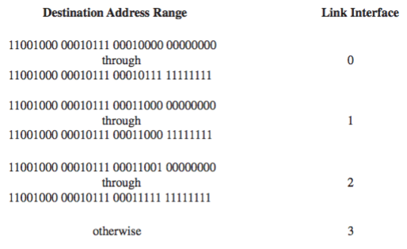
¿Cómo un mensaje encuentra su destinatario?
Gracias al datagrama (paquete) IP
- Longitud típica < 1500 byte.
- TTL: Time-to-live. Cantidad máxima de saltos (hops).
- Si no hay options, header es de 20 byte.
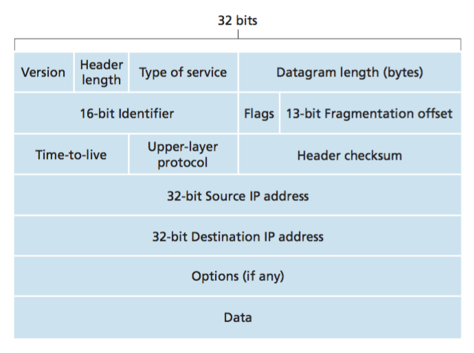
Fragmentación
Cada enlace puede tener distintas MTU (Máximum Transfer Unit)
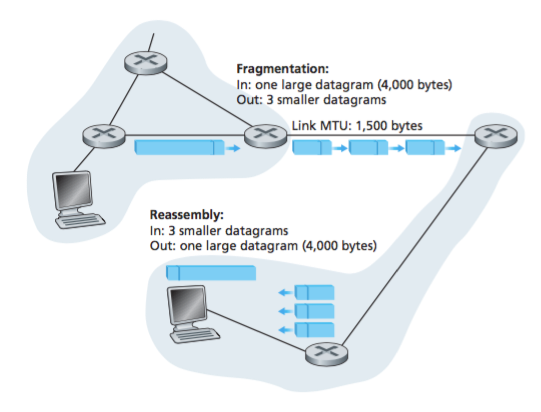
Al encontrar enlace con menor MTU:
- Router fragmenta el datagrama.
- Router envía fragmentos con mismo identificador
- Router en el otro extremo del enlace lo reensambla.
Dirección IP
Direcciones de $32$ bit $= 4$ byte (IPv4).
- $2^{32} = 4294967296$ direcciones.
- Dotted-decimal notation. Grupo de $8$ bit. ($0$ a $255$).
- $146.155.13.45$ es $10010010.10011011.00001101.00101101$
- Dirección única globalmente (casi)
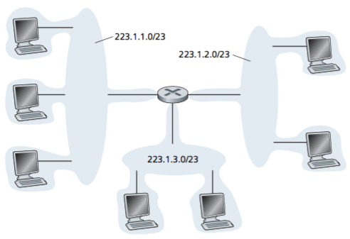
Subredes
Conjunto de nodos conectados a un router
Notación CIDR: Classless Interdomain Routing (RFC4632)
a.b.c.d/x- Ejemplo:
223.1.1.0/24.
Primeros $x$ bit definen la subred.
- Ejemplo:
223.1.1.0/24 - Máscara
/24, ó255.255.255.0 - IP
&máscara $\to$ subred
Últimos $32-x$ bit definen el host dentro de la subred/
- Ejemplo:
223.1.1.40/24 - Máscara es: 255.255.255.0
- Subred es: 223.1.1.0
- Host es: 223.1.1.40
Subred:
146.155.13.0/24- 24 bits para subred. 8 bit para host.
- Tamaño de subred: $2^8 = 256 - 2 = 254$ hosts máximo.
- Nombre de subred: Bits de host en 0.
146.155.13.0- Dirección broadcast: Bits de host en 1.
146.155.13.255- Máscara (mask): $x$ bit en 1, $32-x$ bit en 0.
255.255.255.0
Google: IP calculator
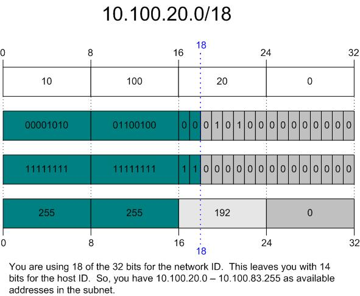
Cada router posee una dirección IP en cada salida
- Switches, por otro lado, NO poseen dirección IP
- Switches son dispositivos de capa 2 (enlace)
Cada grupo de hosts conectados a un router forma una subred
Ejemplo muestra 6 subredes
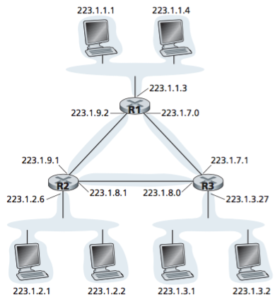
Subredes y direcciones especiales
Direcciones reservadas
0.0.0.0. Dirección de host actual (sólo sirve como origen). "Todas las IPs locales".127.0.0.1. Dirección loopback (localhost)
Subredes reservadas
- Red local:
0.0.0.0/8 - Red loopback:
127.0.0.0/8 - Redes privadas (RFC1918):
10.0.0.0/8172.16.0.0/12192.168.0.0/16
Classful routing
Old school. En el principio existían clases de redes.
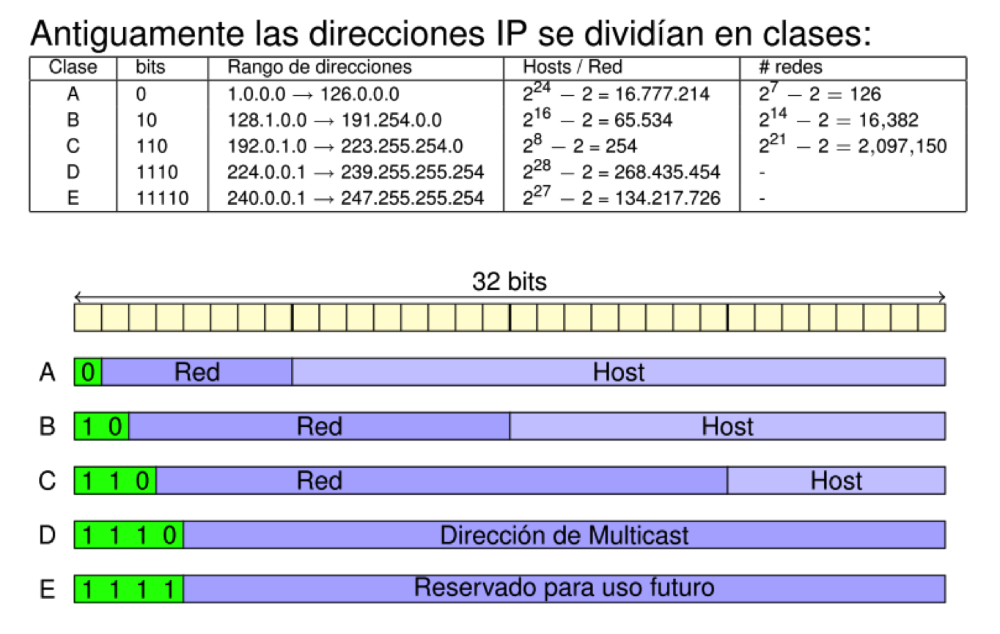
Asignación de direcciones
ISPs asignan bloques de direcciones a organizaciones, y publican sus bloques.
Organizaciones pueden crear nuevas subredes dentro de su bloque
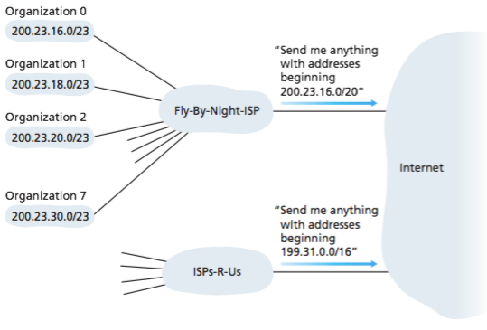
Asignación de direcciones
¿Quién administra direcciones? ¿Cómo las obtiene el ISP?
ICANN: Internet Corporation for Assigned Names and Numbers
ICANN asigna direcciones a "regional Internet registries"
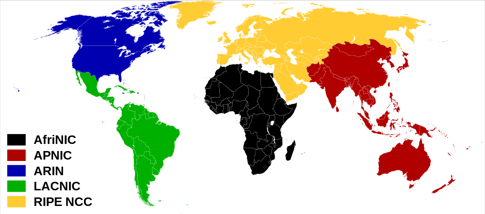
Direcciones dinámicas: DHCP
Dynamic Host Configuration Protocol
Pocas veces configuramos nuestra IP. DHCP es un protocolo plug-and-play (RFC2131)
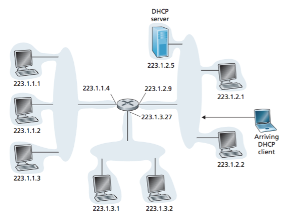
Dynamic Host Configuration Protocol
Protocolo cliente-servidor de 4 etapas
- DHCP Server Discovery. Cliente envía DHCP discover message. Destino 255.255.255.255.
- DHCP Server Offer(s). Server envía DHCP offer message. Destino 255.255.255.255.
- DHCP Request. Cliente envía DHCP request message.
- DHCP ACK. Server envía DHCP ACK message.
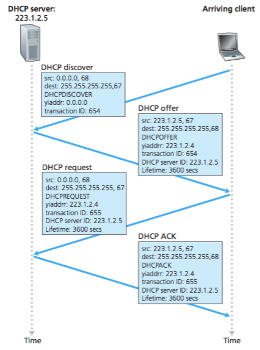
NAT: Network Address Translation
Oficinas pequeñas y casas forman una LANs. Pero ISP provee cantidad limitada de IPs (a veces una).
NAT (RFC2663, RFC3022) permite multiplexar direcciones IP en redes privadas (RFC1918).
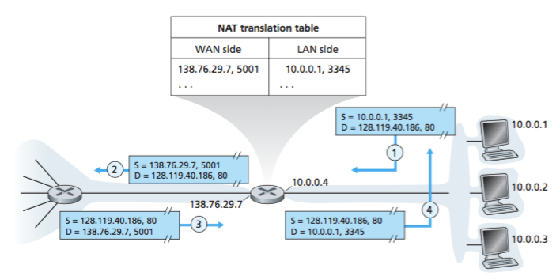
NAT Traversal
¿Cómo contactar un servicio detrás de NAT?
Protocolo UPnp (Universal Plug and Play) permite establecer mappings dinámicos
Mapping: (privateIP, privatePort) $\to$ (publicIP, publicPort)
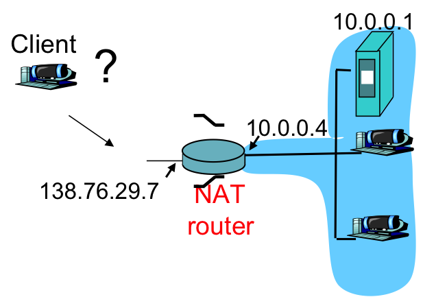
Anti NATs
NAT es ampliamente usado. Pero tiene detractores.
Detractores:
- Números de puerto son para procesos. No para hosts.
- Routers son de capa 3. NAT requiere que modifiquen puertos. Puerto no son de capa 3.
- NAT viola el principio de extremo-a-extremo. Comunicación sin modificaciones intermedias.
- NAT es un parche. Con IPv6 ya nunca deberíamos necesitar NAT.
ICMP
Internet Control Message Protocol
RFC 792. Usado para mensajes de diagnóstico y control en capa de red.
- Se transmiten como payload en paquetes IP. Campo upper-layer protocol indica ICMP.
- ICMP contiene dos campos: (ICMP type, ICMP code)
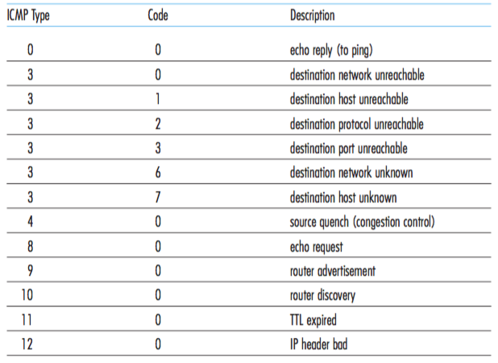
Internet Control Message Protocol
Mensajes (8,0) y (0,0):
echo request y echo replyPrograma
traceroute usa mensajes ICMP con distintos TTL.IPv6
En 1990s, la IEFT se dio cuenta que IPv4 no era suficiente. Empieza el desarrollo de IPv6.
Febrero 2011. IANA asigna último bloque IPv4.
Header IPv6: 40 byte. Prioridad es agilizar el procesamiento.
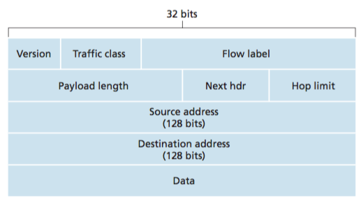
- IPv6 no considera fragmentación intermedia. Solo en los extremos. ICMP
Packet too big. - IPv6 no usa checksum del header.
- ICMPv6 agrega mensajes adicionales.
¿Cómo hacemos la transición?
Routes IPv6 puede ser backwards compatible, pero routers IPv4 no.
- Establecer un día de cambio mundial (flag day). Se intentó hace 25 años para NCP a TCP.
- Usar routers dual-stack, IPv6/IPv4. Algunos campos se pueden perder en la conversión
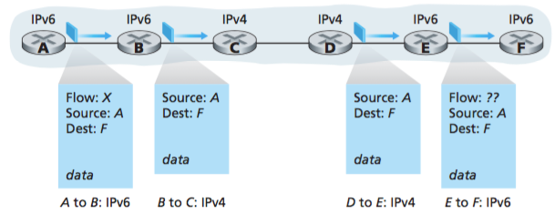
Otra solución: tunneling
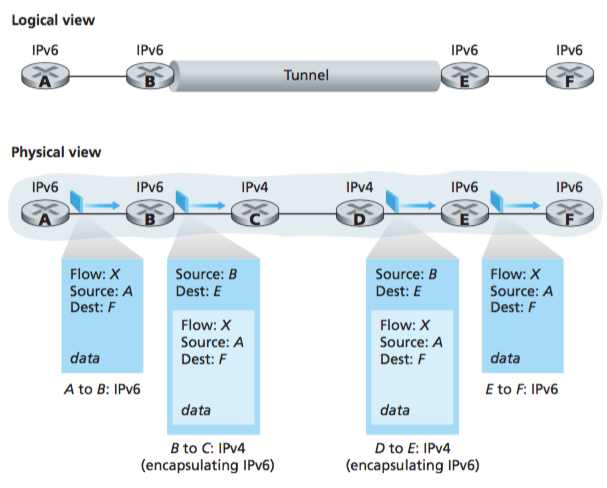
Algoritmos de Routing
Objetivo: conseguir que el paquete llegue desde un router de origen a un router de destino
- Conjunto de routers se modela como un grafo $G=(V,E)$
- Costo entre conexiones: ancho de banda, congestión, costo, distancia, ...
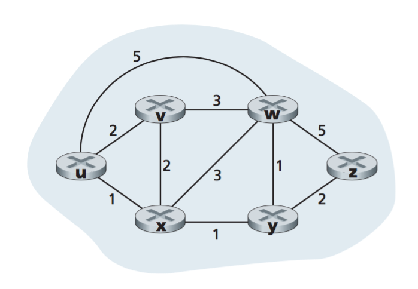
Dos tipos de algoritmos
- Algoritmos centralizados
- Nodos conocen la información completa de la red.
- Algoritmos Link-State (LS).
- Algoritmos decentralizados
- Cálculo iterativo y distribuido entre nodos, sin conocer la topología completa.
- Algoritmos de Distance-Vector (DV)
Link-State Routing
- Cada nodo envía su información de conectividad (vecinos y costos) a sus vecinos
- Información se comunica a los demás vía flooding
- Cuando todos tienen información de la topología, cada uno calcula las rutas más cortas
- Algoritmo de Dijkstra (1957)
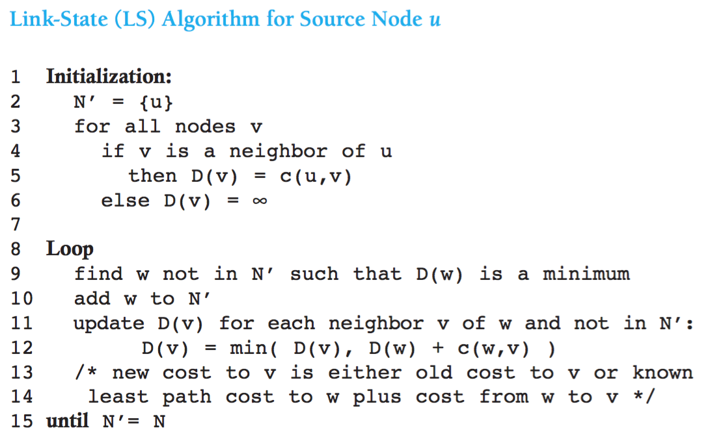
- Cada nodo envía su información de conectividad (vecinos y costos) a sus vecinos
- Información se comunica a los demás vía flooding
- Cuando todos tienen información de la topología, cada uno calcula las rutas más cortas
- Algoritmo de Dijkstra (1957)
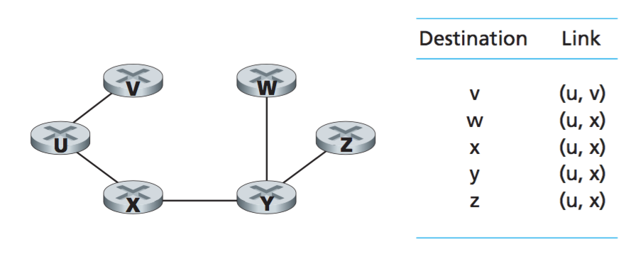
Tabla de routing para nodo u
Distance Vector (DV) algorithm
Distribuido, asíncrono, iterativo. Basado en ecuación de Bellman-Ford
$d(x,y) = min_v\{c(x,v) + d(v,y)\}$
- Cada nodo mantiene una tabla de la mejor ruta a sus vecinos
- Cada nodo comparte su tabla con sus vecinos
- Cuando la información se ha propagado a todos los nodos, cada uno conoce las mejores rutas
- Diferencia con LS: se propaga información de rutas, en lugar de enlaces
Funciona de manera distribuida
- Se gatilla ante cambios locales de costos
- Se gatilla al recibir mensajes de vecinos
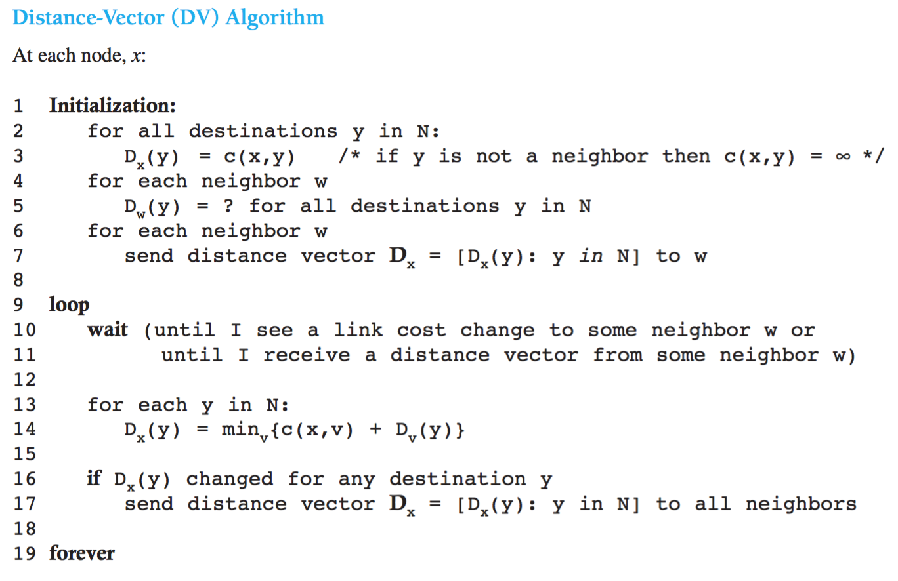
Distribuido, asíncrono, iterativo. Basado en ecuación de Bellman-Ford
$d(x,y) = min_v\{c(x,v) + d(v,y)\}$
- Cada nodo mantiene una tabla de la mejor ruta a sus vecinos
- Cada nodo comparte su tabla con sus vecinos
- Cuando la información se ha propagado a todos los nodos, cada uno conoce las mejores rutas
- Diferencia con LS: se propaga información de rutas, en lugar de enlaces
Funciona de manera distribuida
- Se gatilla ante cambios locales de costos
- Se gatilla al recibir mensajes de vecinos
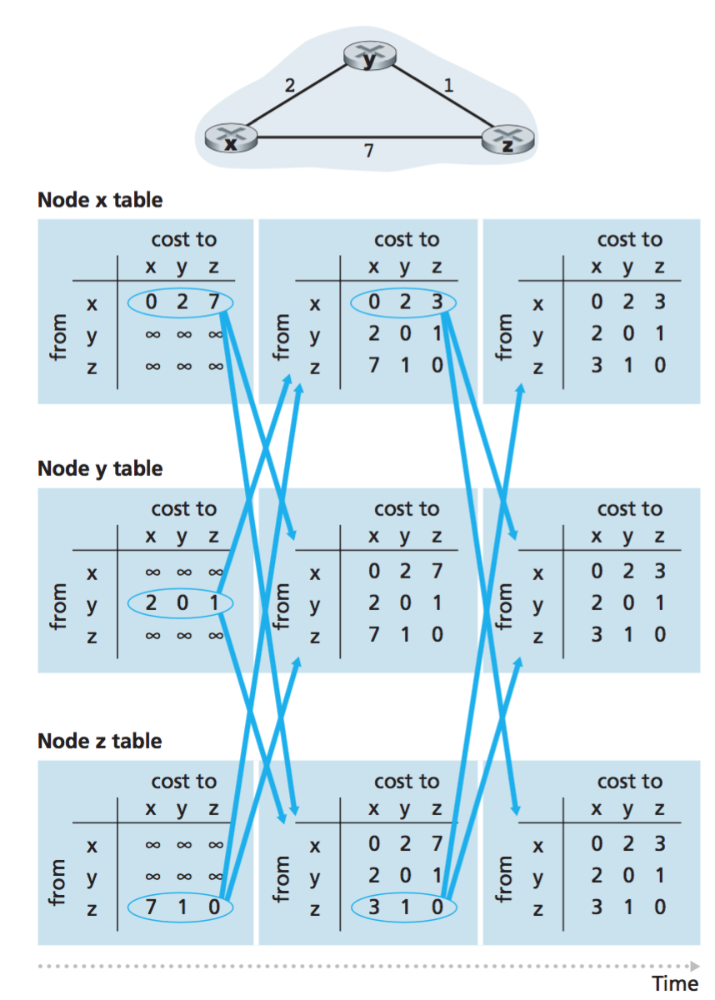
Comportamiento ante cambios. $D_y(x)=4$, $D_y(z)=1$, $D_z(y)=1$, $D_z(x)=5$
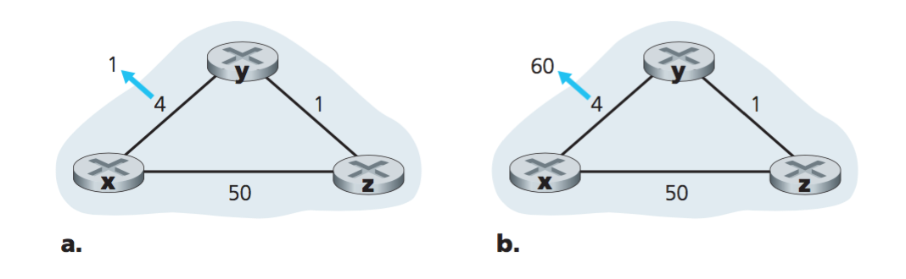
- Disminuciones (buenas noticias) se propagan rápidamente
- Aumentos (malas noticias) se propagan lentamente. Count-to-infinity
- ¿Como evitarlo? Anunciando ruta infinita. Poisoned-reverse
Link-State vs Distance Vector
Link State
- $N$ nodos, $E$ enlaces: $O(NE)$ mensajes
- $O(N^2)$ complejidad en cada nodo
- Ante errores, se propaga ausencia de enlace local.
Distance Vector
- Se ejecuta en paralelo y solo se propaga la ruta a los vecinos.
- Ante errores, se propaga el error.
- Puede converger muy lentamente. Tiempo de convergencia indeterminado.
Routing de gran escala
No es factible almacenar tablas para todos los routers de Internet.
- Redes están organizadas jerárquicamente.
- Routers pertenecen a distintas organizaciones.
- Routers pertenecientes al mismo dominio administrativo forman un sistema autónomo
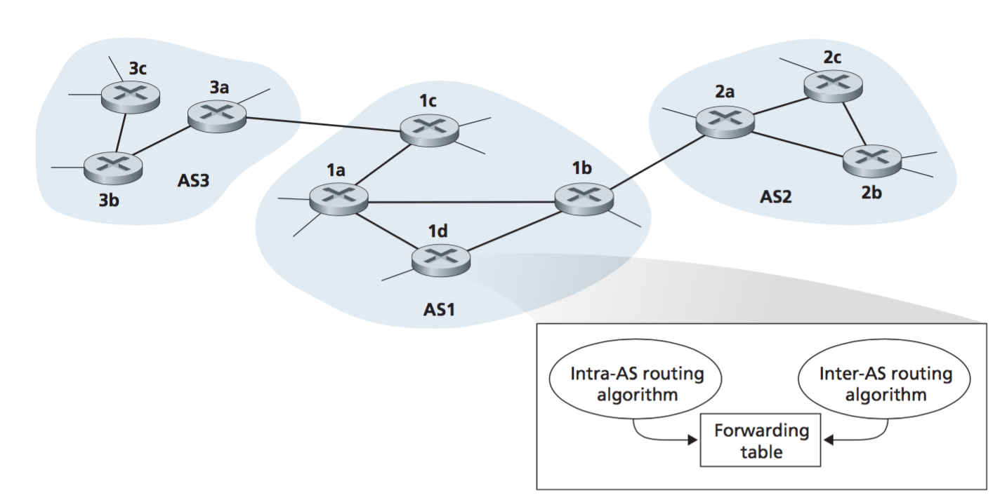
Routing de Internet
- Internet se compone de Sistemas Autónomos (AS) interconectados
- Algoritmos intra-AS resuelven ruteo en un subconjunto de la red
- Algoritmos inter-AS ayudan a determinar forwarding tables entre distintos AS
- Routers de salida son gateway routers
Intra-AS
IGP: Interior Gateway Protocols
- RIP: Routing Information Protocol
- Algoritmo Distance Vector (DV)
- Usado en lower tier ISPs
- OSPF: Open Shortest-Path First
- Algoritmo Link State (LS)
- Usado en upper tier ISPs
Inter-AS
Border Gateway Protocol: BGP
- Estándar de facto para comunicación Inter-AS
- Permite a una subred anunciar su existencia a Internet
- Obtener información de reachability de otras subredes
- Propagar información de reachability a nodos internos
- Determinar buenas rutas o otras subredes, en base reachability o políticas específicas.
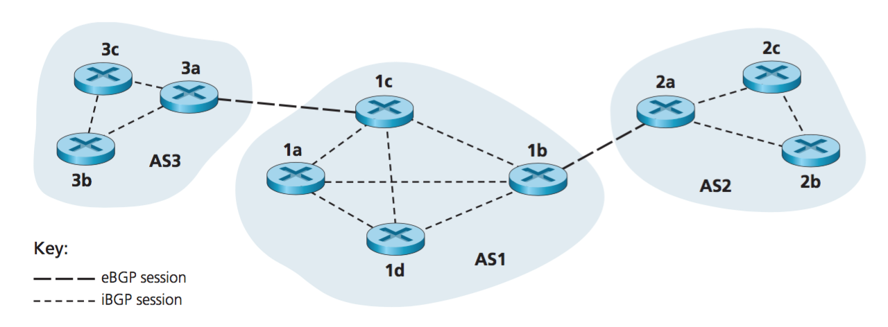
BGP: Border Gateway Protocol
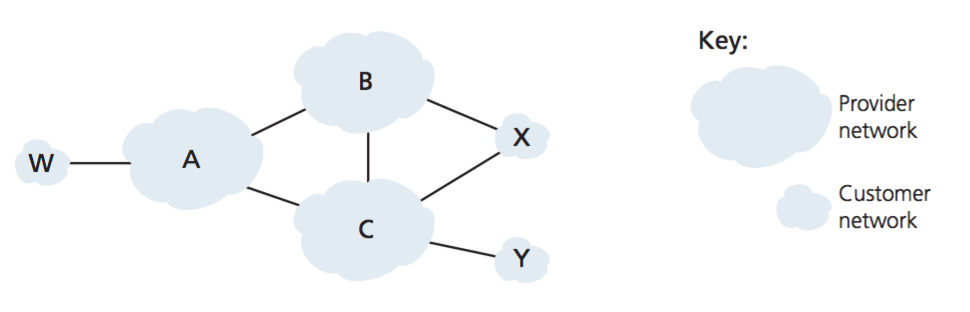
ISPs: A,B,C; Clientes: X,W,Y
- $A$ anuncia a $B$ el camino $(A,W)$
- $B$ anuncia a $X$ el camino $(B,A,W)$
- ¿Debería $B$ anunciar a $C$ el camino $(B,A,W)$?
- $B$ no obtiene beneficio por enrutar $(C,B,A,W)$
- $B$ quiere enrutar sólo a sus clientes
- $B$ quiere forzar a que $C$ deba enrutar hasta $W$ a través de $A$